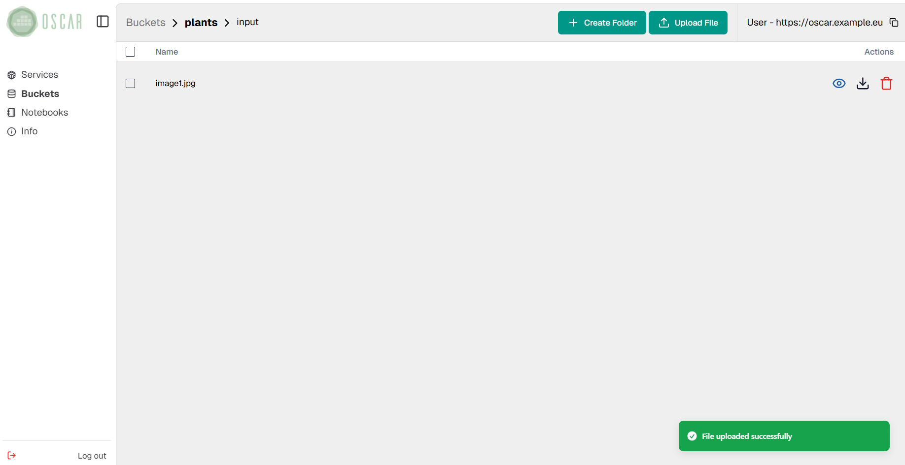
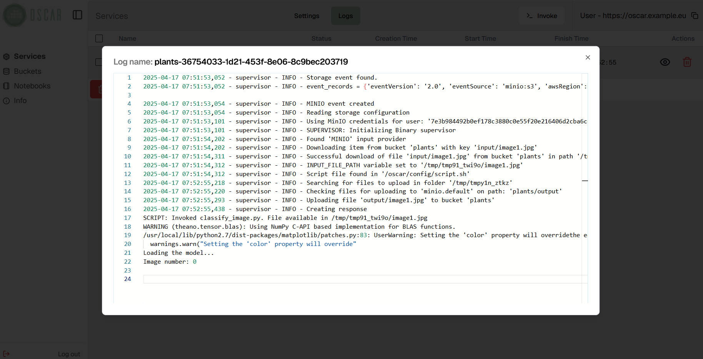

Using OSCAR
OSCAR allows the creation of serverless file-processing services based on container images. These services require a user-defined script with the commands responsible of the processing. The platform automatically mounts a volume on the containers with the FaaS Supervisor component, which is in charge of:
- Downloading the file that invokes the service and make it accessible through the
INPUT_FILE_PATHenvironment variable. - Execute the user-defined script.
- Upload the content of the output folder accessible via the
TMP_OUTPUT_DIRenvironment variable.
You can follow one of the examples in order to test the OSCAR framework for specific applications. We recommend you to start with the plant classification example detailed bellow.
Login
OSCAR is exposed via a Kubernetes ingress and it is accessible via the Kubernetes master node IP. If you deployed it using EC3 you can find the credentials here.

After a correct login, you should see the main view:

Deploying services
In order to create a new service, you must click on the "DEPLOY NEW SERVICE" button and follow the wizard. Remember that a script must be provided for the processing of files. This script must use the environment variables INPUT_FILE_PATH and TMP_OUTPUT_DIR to refer to the input file and the folder where to save the results respectively:
#!/bin/bash
echo "SCRIPT: Invoked classify_image.py. File available in $INPUT_FILE_PATH"
FILE_NAME=`basename "$INPUT_FILE_PATH"`
OUTPUT_FILE="$TMP_OUTPUT_DIR/$FILE_NAME"
python2 /opt/plant-classification-theano/classify_image.py "$INPUT_FILE_PATH" -o "$OUTPUT_FILE"
You must fill in the fields indicating the container image to use, the name of the service and the script file. In addition, you can add environment variables, specify the resources (RAM and CPUs) and choose the log level of the service.

Next, the credentials of the storage providers to be used must be introduced. As the platform already has a MinIO deployment to operate, it is not necessary to enter its credentials for using it.
Multiple MinIO, Onedata and Amazon S3 storage providers can be used. Remember to click the "ADD" button after completing each one.

Then, click the "NEXT" button to go to the last section of the wizard.

In this section, you must first choose the paths of the storage provider to be used as source of events, i.e. the input bucket and/or folder that will trigger the service.
Only the minio.default provider can be used as input storage provider.

After filling in each path, remember to click on the "ADD INPUT" button.
Finally, the same must be done to indicate the output paths to be used in the desired storage providers. You can also indicate suffixes and/or prefixes to filter the files uploaded to each path by name.

The resulting files can be stored in several storage providers, like in the following example, where they are stored in the MinIO server of the platform and in a Onedata space provided by the user.

After clicking the "SUBMIT" button the new service will appear in the main view after a few seconds.

Triggering the service
HTTP endpoints
OSCAR services can be invoked through auto-generated HTTP endpoints. Requests to these endpoints can be made in two ways:
- Synchronous through the path
/run/<SERVICE_NAME>. This redirects the request to the OpenFaaS gateway in order to perform the processing. - Asynchronous through the path
/job/<SERVICE_NAME>. This mode is used to perform file-processing when files are uploaded to the input storage provider, creating a Kubernetes job per service invocation.
The content of the HTTP request body will be stored as a file that will be available via the INPUT_FILE_PATH environment variable to process it.
A detailed specification of the OSCAR's API and its different paths can be found here.
Uploading files
Once a service has been created, it can be invoked by uploading files to its input bucket/folder. This can be done through the MinIO web interface (accessible from the Kubernetes frontend IP, on port 30300) or from the "Minio Storage" section in the side menu of the OSCAR web interface. Expanding down that menu will list the buckets created and, by clicking on their name, you will be able to see their content, upload and download files.

To upload files, first click on the "SELECT FILES" button and choose the files you want to upload from your computer.

Once you have chosen the files to upload, simply click on the "UPLOAD" button and the file will be uploaded, raising an event that will trigger the service.

Note that the web interface includes a preview button for some file formats, such as images.

Service status and logs
When files are being processed by a service, it is important to know their status, as well as to observe the execution logs for testing. For this purpose, OSCAR includes a log view, accessible by clicking on the "LOGS" button in a service from the main view.

In this view you can see all the jobs created for a service, as well as their status ("Pending", "Running", "Succeeded" or "Failed") and their creation, start and finish time.

To view the logs generated by a job, simply click on the drop-down button located on the right.

The view also features options to refresh the status of one or all jobs, as well as to delete them.
Downloading files from MinIO
Downloading files from the platform's MinIO storage provider can also be done using the OSCAR web interface. To do it, simply select one or more files and click on the button "DOWNLOAD OBJECT" (or "DOWNLOAD ALL AS A ZIP" if several files have been selected).

In the following picture you can see the preview of the resulting file after the execution triggered in the previous step.
Deleting services
Services can be deleted by clicking on the trash can icon from the main view.

Once you have accepted the message shown in the image above, the service will be deleted after a few seconds.